Suzuka, Mie: things to do, food and stays
Suzuka · Mie
Suzuka
Highlighted on the Mie map.

Stay
鈴鹿サーキットホテル
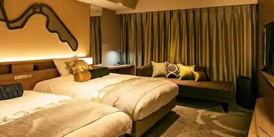
Suzuka Sakitto Hotel
ホテルルートイン鈴鹿
Hotel Route Inn Suzuka
コンフォートホテル鈴鹿
Comfort Hotel Suzuka
Hotel in Shirakoekimae, Suzuka with parking; 3-minute walk from Kintetsushirako Station.
ホテルキャッスルイン鈴鹿中央【旧ホテルキャッスルイン玉垣】
Hotel Kyassuruin Suzuka Chuo (Kyu Hotel Kyassuruin Tamagaki)
Hotel in Minamitamagaki, Suzuka with private baths.
ARIGATO STAY鈴鹿（旧ホテルトレンド鈴鹿）
ARIGATO STAY Suzuka (Kyu Hotel Torendo Suzuka)
Hotel in Minamitamagaki, Suzuka with breakfast available.
ホテルキャッスルイン鈴鹿
Hotel Kyassuruin Suzuka
Hotel in Santokoro, Suzuka with parking.
天然温泉 伊勢詣の湯 スーパーホテル鈴鹿
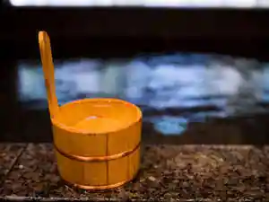
Tennen Onsen Ise Kei No Yu Super Hotel Suzuka
Hotel in Santokoro, Suzuka with parking.
鈴鹿ストーリアホテル ～平田駅前～
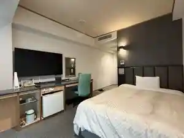
Suzuka Sutoria Hotel ~ Hirata Ekimae ~
Hotel in Santokoro, Suzuka; 1-minute walk from Kintetsuhiratacho Station.
白子ストーリアホテル ～鈴鹿市・白子駅前～
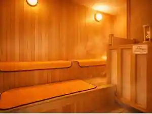
Shirako Sutoria Hotel ~ Suzuka Shi Shirako Ekimae ~
Hotel in Shirakoekimae, Suzuka with buffet meals and breakfast available.
ホテルグリーンパーク鈴鹿
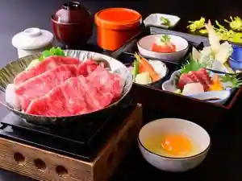
Hotel Gurin Park Suzuka
Hotel in Shirako, Suzuka with parking.
アパホテル〈鈴鹿中央〉
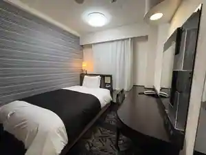
APA Hotel < Suzuka Chuo >
日本料理 旅館 いすゞ
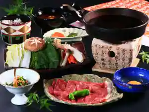
Nihonryori Ryokan Isu
Dining
Motive Pizzeria E Caseificio
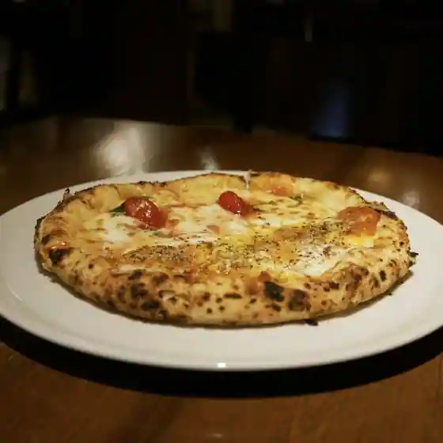
Motive Pizzeria E Caseificio
Trattoria YAMAKAWA
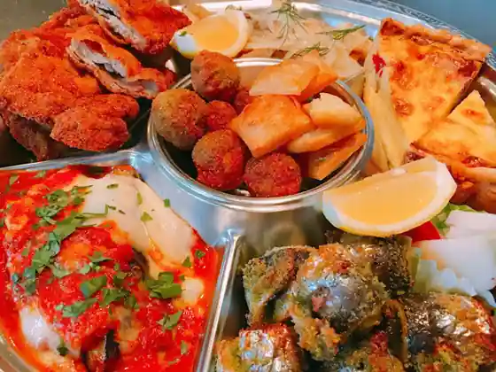
Trattoria YAMAKAWA
まと場
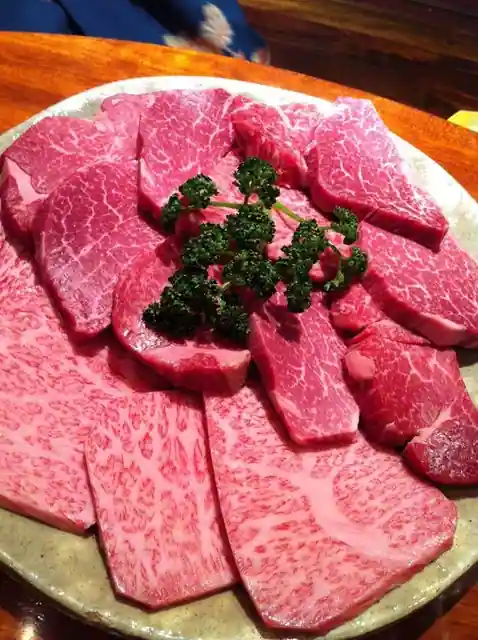
Mato Ba
スカスカ
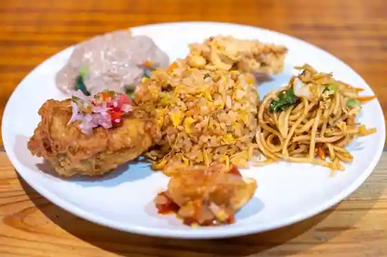
Sukasuka
洋食屋 ポルコ
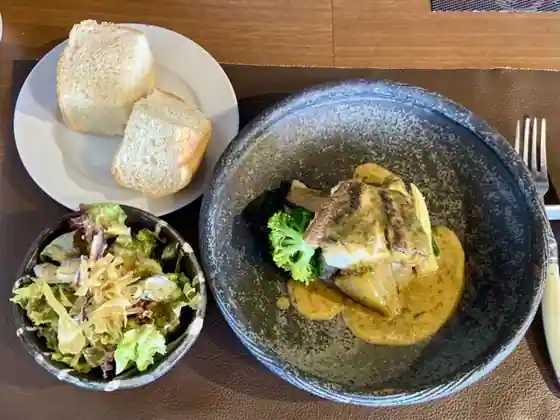
Yoshoku Ya Ho Ruko
あおき
Aoki
鞍馬サンド 鈴鹿店
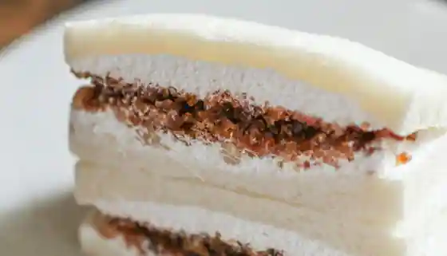
Kurama Sando Suzuka
鴨と鶏 中華そば 大林
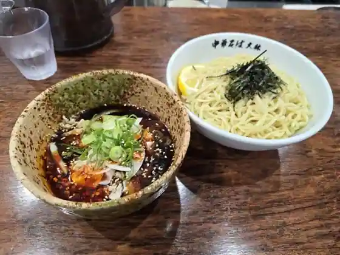
Kamo To Niwatori Chuka Soba Obayashi
CHERIR SUZUKA
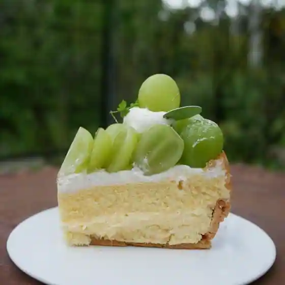
CHERIR SUZUKA
ロズマリーノ
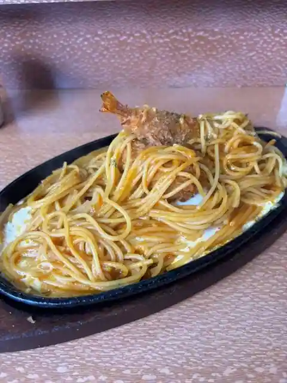
Rozumarino
二代目ゲンコツ炭火焼肉 本店
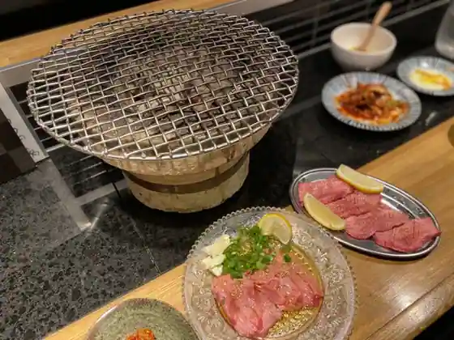
Nidaime Genkotsu Sumibi Yakiniku Hon
ドミニク ドゥーセの店 鈴鹿本店
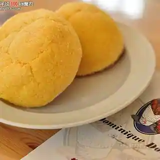
Dominiku Douse No Suzuka Hon
四日市ヒモノ食堂 鈴鹿店
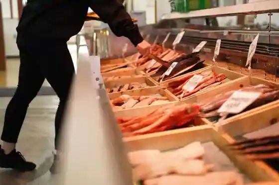
Yokkaichi Himono Shokudo Suzuka
中華そば 東雲
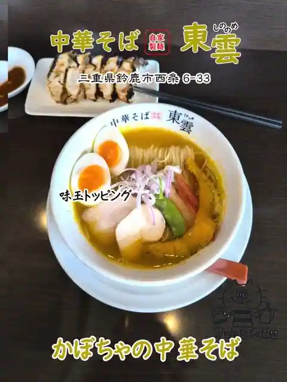
Chuka Soba Shinonome
みさき屋
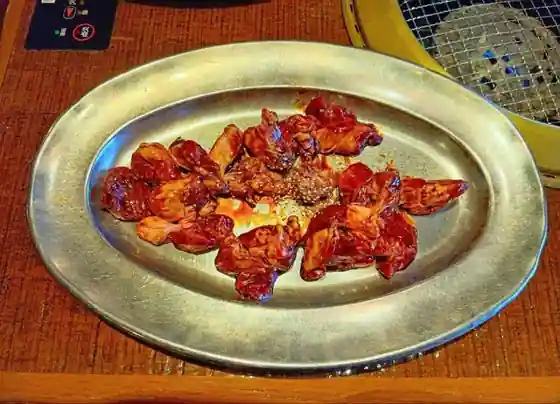
Misaki Ya
ふじがおか
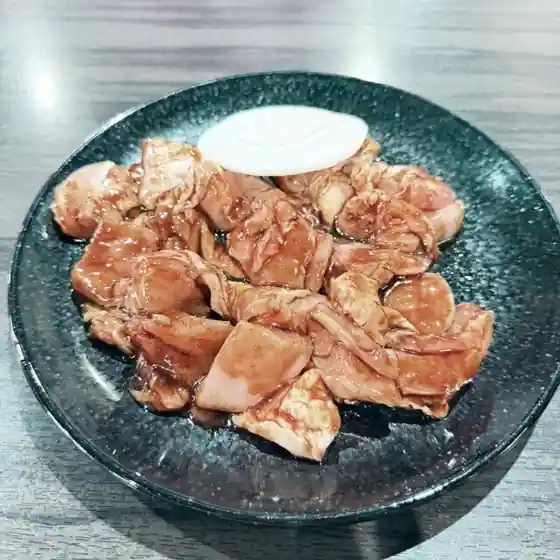
Fujigaoka
天婦羅 桂 いし坂
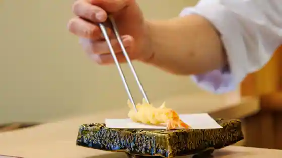
Tenpura Katsura Ishi Saka
グレイビーバーガー
Gureibi Burger
洋食Mogu
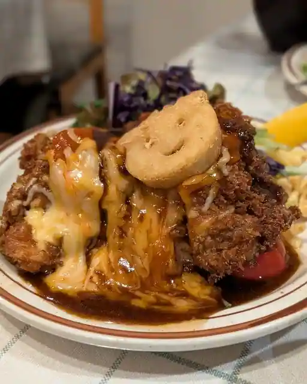
Yoshoku Mogu
來來憲
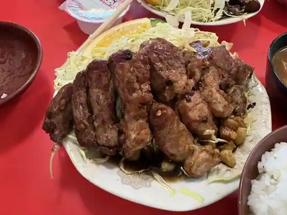
Rairai Nori
一歩
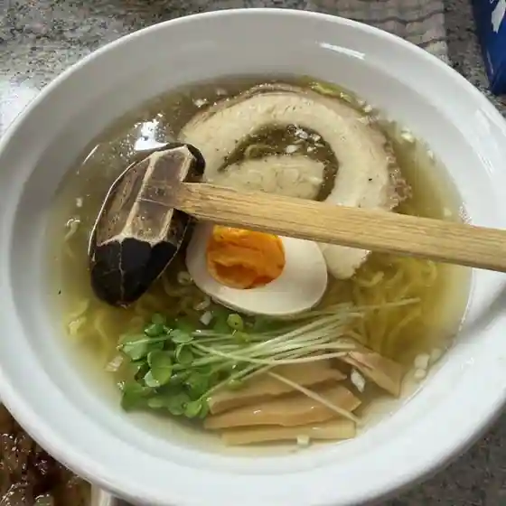
Ippo
トレイズ
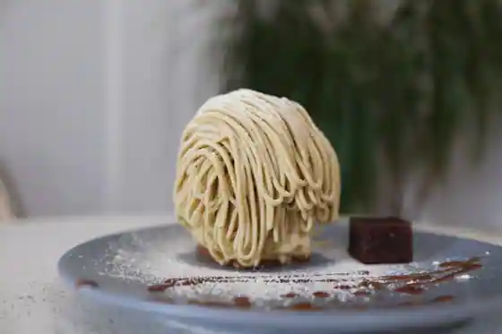
Toreizu
ラーメンショップ フラワー店
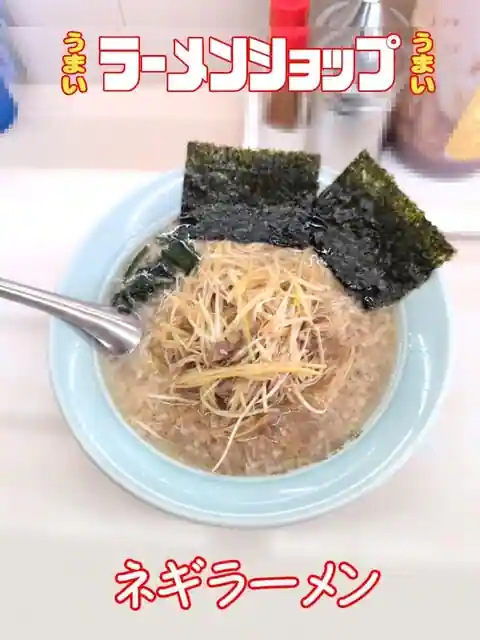
Ramen Shoppu Furawa
パークレーンコーヒー
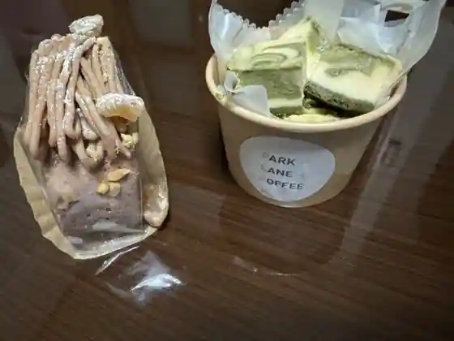
Park Ren Coffee
Sights
Kokudo 23 Gosen Chikaku !! Torikkusuichigo Farm

Suzuka Sakitto Park Akua Adobencha

Shiki no Kaboku to Shizen Hayashi no Satoyama Park (Tsubaki Green Park)

Hotaru Village

Takamiya Museum
Sakura no Mori Park
Suzuka Kai Town no Na no Hana
Kenkyu Saibai Farm Suzuka Forest Garden (Akatsuka Botanical Garden)
Tsubaki Dai Shrine
Suzuka Sakitto
Daiseforesuto Park (Suzuka Seishonen Forest)
Asano Ya Mamoru Kinen Ie
Furuki Dogu no Kan Seikatsukobo Kamedaya
O Hanashi to Natsukashi Kami Shibai no O Tera
Furiigyararii
Garakuta Hyotan Workshop
Hotoke Sho So Main Shop Butsudan Workshop
Katara I Kan Yokota
Uesutoreshingukazu
Shinobi Sha Na Ka " Ta
Yakan Nimoichigo Kari Okadaichigo Sono
Seiryu Ichigo Sono
Takaokafamu
Kosei Tera Daruma Tera
Ishigaki Ike Park
Suzuka Dento Sangyo Hall (Ise Katagami Taiken Hori)
Kachi Soku Nichi Shrine
Chiyozaki Coast
Fu Nanji no Ainashi
Fu Nanji
Shin Fuku Tera
Misuzu Kantorii Kurabu
Shutcho Babekyu Manpuku Mie
Kurafutoarumajiro
Suzuka Tourism Association
Nyudogagaku
Suzu Mine Gorufu Kurabu
Sho Shi Su Gorge
Sho Shi Su no Byobu Iwa
Torin Tera
Kobe Castle Ruins
Sugawara Shrine
Umi no Mieru Kishi Okayama Ryokuchi
Suzuka Kawa Kasen Ryokuchi
Suzuka Furawa Park
Ozawa (Honjin) Museum
Suzuka Koko Museum
Chota no Ogusu
Ryuko Tera
Kawamata Shrine no Sudajii
Kaikoku Shoko no Hi
Maekawa Tei Goro Shiryoshitsu
Ishi Daijin
Sakai Shrine
Hakucho Tsuka Burial Mound
Ozuka Burial Mound
Ejima Wakamiya Hachiman Shrine
Ise Ko Ato (Choja Yashiki Iseki)
Houn Tera
Taishi Tera
Suzuka Dento Sangyo Hall
Daikokuya Kodayu Memorial Museum
Sasaki Nobutsuna Memorial Museum
Suzuka Sumi Susumu Makoto Do
Gangyo Tera
Seiho Tera
Miya Yubi Michi Gaku
Ishiyakushi no Ichiri Tsuka Ato
Suzuka Yakusho 15 Kai Tembo Robii
Sasaki Nobutsuna Memorial Museum
Tsuzumigaura Coast
Suzuka Supotsu Garden Puru
Senshu Tera Kobe Betsuin
Koyasu Kan'onji
Nishi no Kido no Hiiragi
Shirako Fudan Sakura
Nyudo Gaku Inutsuge Oyobi Asebi Gunraku
Kinshosui Shotaku Shokubutsu Gunraku
Jizo Dai Matsu
Ishiyakushi no Kama Sakura
Suzuka Supotsu Garden Tenisukoto
Chunichi Kantorii Club
Nyonin Teibo Hi
Experience Gakushu Ise Katagami Museum
Kira Nikichi no Hi
Ishiyakushi Tera
Daikokuya Kodayu Memorial Museum
Ise Katagami Museum
Kojin Yama Kan'onji
Shono Yado Museum
Kasa to Shrine